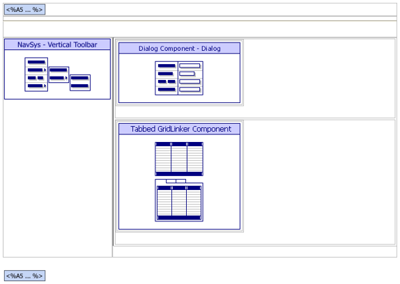
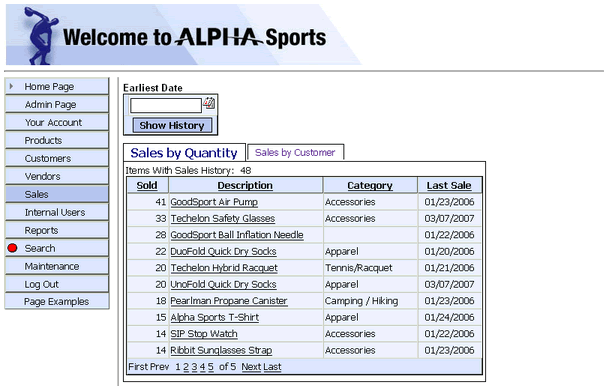

ASWSALESHIST.A5W
Purpose
The application administrator uses the ASWSALESHIST.A5W page to review the number of unit sales for products and the number of sales to customers.
Description
The ASWSALESHIST.A5W page contains a tabbed gridlinker. The parent for the gridlinker is GRD_TITLEHIST, which is a grid with one record and one field based on the dummy table. The field has a value of 1 and the grid control is hidden. This grid's purpose is to supply a parent grid for the child grids in the tabbed gridlinker.
The child grids are GRD_HISTCUST and GRD_HISTQUAN. Both have a calculated field named "link" with a value of 1 in each record. This field links child grids to the parent and show all records in and displays the sales history summary tables at all times.
This page uses Xbasic code to build a summary table that displays a sales history. This summary table must be built on this page, because it is based on a starting date used to select which records should be summarized. The summary requires a reverse set to build the summary for the sales by quantity. This set has the line items as the parent and the header as a child, since the summary is by product ID. The page includes a small dialog to select the starting date.
The page shows how the raw Xbasic code from two defined operations: sales_summary_by_cust and sales_summary_by_quan were modified to run on this page.
We customized the gridlinker's Page Layout Template to remove the html table that contained the header grid output. Since it is only displays the common link (which is constant), the header grid can safely be removed.
Links
The Sales > Sales History entry of the NAV_INT navigation component displays the ASWSALESHIST.A5W page.

ASWSALESHIST.A5W in the WYSIWYG tab of the HTML Editor

ASWSALESHIST.A5W in the Browser
Edits to the Page Source
When you look at ASWSALESHIST.A5W with the Source tab of the HTML Editor, you will see a large amount of HTML and Xbasic code. The HTML Editor placed almost all of it there automatically, as we used the WYSIWYG tab to place the tables, text, graphics, and components on the page. There are a few interesting exceptions, where we changed the page code through the Source tab.
We added the following code to assure that the sales by quantity grid component appears by default.
|
if eval_valid("TGRDL_HIST_SelectGrid") = .F. 'this is the variable returned when a new tab is selected TGRDL_HIST_SelectGrid = "GRD_HISTQUAN" 'this sets which component will have focus elseif TGRDL_HIST_SelectGrid = "" TGRDL_HIST_SelectGrid = "GRD_HISTQUAN" end if
|
This script tests the start_date value input into the DLG_HDATE dialog component. If the start_date variable has not been created or it contains an invalid value, the code creates it and assigns a default value. The default date for start_date is arbitrary, but it will include all records.
|
if eval_valid("start_date") = .F. ' variable value not found start_date = "01/01/1900" elseif isdate(start_date) = .F. ' not a valid date start_date = "01/01/1900" end if |
The following code is for testing only. It starts a timer to show how long the operations run. On a real page, the following two commands would be removed.
|
dim timer as util::timer timer.Start() |
A user can open a web page without a database being open. Therefore, a saved operation cannot be guaranteed to be available. We ran and tested the following code built by the operations genie. The modified Xbasic is modified as shown below.'
 Note : This code
runs every time the page loads. If the number of records in the table
is large, this code may slow the opening time considerably.
Note : This code
runs every time the page loads. If the number of records in the table
is large, this code may slow the opening time considerably.
If the user selects the sales by quantity tab, this code runs. We redefined the sum.filter variable to use the start_date variable input above.
|
if TGRDL_HIST_SelectGrid = "GRD_HISTQUAN" ' ** Original RAW xbasic from operation saved in 'invoice_invert' set ** 'tbl = table.current() 'sum.db = "sales_summary_quan.DBF" 'sum.db_dd_delete = .F. 'sum.result_overwrite = .F. 'sum.order = "PRODUCT_ID" 'sum.filter = "INVOICE_HEADER->DATE>CTOD(\"01/01/1900\")" 'sum.options = "I" 'sum.fields = 4 'sum.field1 = "Product_Id" 'sum.code1 = 0 'sum.field2 = "QUANTITY" 'sum.code2 = 1 'sum.field3 = "Invoice_Header->DATE" 'sum.code3 = 7 'sum.field4 = "\"filter\"" 'sum.code4 = 15 'tbl.summarize() ' ** Modified Xbasic to add path aliases and new date filter ** tbl = table.open("PathAlias.ADB_Path\invoice_invert.set") sum.db = "PathAlias.ADB_Path\sales_summary_quan.DBF" sum.order = "PRODUCT_ID" sum.filter = "INVOICE_HEADER->DATE>CTOD(\"" + start_date + "\")" sum.options = "I" sum.fields = 3 sum.field1 = "Product_Id" sum.code1 = 0 sum.field2 = "QUANTITY" sum.code2 = 1 sum.field3 = "Invoice_Header->DATE" sum.code3 = 7 tbl.summarize() tbl.close()'close set after summarize |
If the user selects the "Sales by Customer" tab, this code runs. We redefined the sum.filter variable to use the start_date variable input above.
|
else ' ** Original RAW xbasic from operation saved in 'invoice_header' table ** 'tbl = table.current() 'sum.db = "sales_summary_cust.DBF" 'sum.order = "CUSTOMER_ID" 'sum.filter = "DATE>CTOD(\"01/01/1900\")" 'sum.options = "I" 'sum.fields = 4 'sum.field1 = "Customer_Id" 'sum.code1 = 0 'sum.field2 = "Invoice_Number" 'sum.code2 = 2 'sum.field3 = "Date" 'sum.code3 = 7 'sum.field4 = "Invoice_Number" 'sum.code4 = 7 'tbl.summarize() ' ** Modified xbasic to add path aliases and new date filter ** tbl = table.open("PathAlias.ADB_Path\invoice_header") sum.db = "PathAlias.ADB_Path\sales_summary_cust.DBF" sum.order = "CUSTOMER_ID" sum.filter = "DATE>CTOD(\"" + start_date + "\")" sum.options = "I" sum.fields = 4 sum.field1 = "Customer_Id" sum.code1 = 0 sum.field2 = "Invoice_Number" sum.code2 = 2 sum.field3 = "Date" sum.code3 = 7 sum.field4 = "Invoice_Number" sum.code4 = 7 tbl.summarize() tbl.close()'close table after summarize end if |
The following code is for testing only. It stops the timer started earlier to show how long the operations ran. On a real page, the following commands would be removed.
|
timer.Stop() |
This code highlights the Sales entry of the menu.
|
with tmpl_NAV_INT location = "Sales" componentName = "NAV_INT" end with |
This script inserts the current year into the last year property of the start_date calendar control on the DLG_HDATE dialog component. This prevents a user from selecting a future date for a sales report.
|
with tmpl_DLG_HDATE with Variable_Info1 .DatePicker.DateFormat = "mm/dd/yyyy" .DatePicker.HighYear = cyear( date() ) end with componentName = "DLG_HDATE" end with |
ASWSALESHIST.A5W is normally called with a parameter in its URL. When the user clicks the submit button of any dialog, by default it would use request.script_name as the URL to open. This URL does not include the value passed to the page when it originally opened, which is needed in this case to maintain focus on the selected tab.
We modified the code to submit the full URL by replacing request.script_name with request.request_uri.
|
x_DLG_HDATE.Output.Body.Dialog_HTML = stritran(x_DLG_HDATE.Output.Body.Dialog_HTML, request.script_name, request.request_uri) ? x_DLG_HDATE.Output.Head.JavaScript ? x_DLG_HDATE.Output.Head.CSS_Link |
The A5W_INCLUDE() statement is in the top row of the table. It loads TOPPAGE.A5W and displays a standard page header.
|
<body> <p> <table cellSpacing=0 cellPadding=0 width="800" border=0> <tr> <td colspan="2"> <%a5 a5w_include("toppage.a5w") %> </td> </tr> |
This code displays the test time calculated above.
|
<%a5 ?"Time to run Summary = " + alltrim( str(timer.ElapsedMicroseconds*.000001, 16, 6) )%> |
Page Security Information
Login Required
Groups Allowed > Accounting, Administrators, Clerical, Marketing
See Also